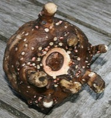

こんにゃくいもの生産量 都道府県ランキング
収穫量
こんにゃくいもの収穫量が全国で最も多いのは群馬県で、3万7,000 tです。全国（3万8,500 t）の96%を占めます。

| 順位 | 都道府県 | 収穫量 | 全国に占める割合 |
|---|---|---|---|
| 1位 | 群馬県 | 3万7,000 t | 96% |
PR

こんにゃくいもの生産量の推移（令和3年産〜令和7年産）
全国の収穫量は、令和3年産の5万4,200 tから令和7年産の3万8,500 tへ、29%減りました。期間中、1位は一貫して群馬県です。
| 年 | 全国 | 1位 | 2位 | 3位 |
|---|---|---|---|---|
| 令和7年産 | 3万8,500 t | 群馬県3万7,000 t | ||
| 令和6年産 | 5万1,400 t | 群馬県4万9,700 t | 茨城県637 t | 栃木県401 t |
| 令和5年産 | 5万900 t | 群馬県4万8,500 t | ||
| 令和4年産 | 5万1,900 t | 群馬県4万9,200 t | ||
| 令和3年産 | 5万4,200 t | 群馬県5万1,200 t |
この数字について
- 分類：サトイモ科
- 全国の収穫量：3万8,500 t
- この数字が表すもの：収穫量（収穫された重量）
- 調査：作物統計調査 作況調査（麦・豆・工芸農作物ほか） 令和7年産
- 1県分を調査（調査していない県は順位に入りません）
こんにゃくいもの生産量について、よくある質問
- こんにゃくいもの生産量が日本一の都道府県はどこですか？
- 群馬県です。作物統計調査 作況調査（麦・豆・工芸農作物ほか）（令和7年産）で3万7,000 tでした。
- こんにゃくいもの全国の生産量はどれくらいですか？
- 3万8,500 t（令和7年産）です。
米・麦・豆の生産量 ランキング一覧（米・麦・豆の全品目の1〜3位）